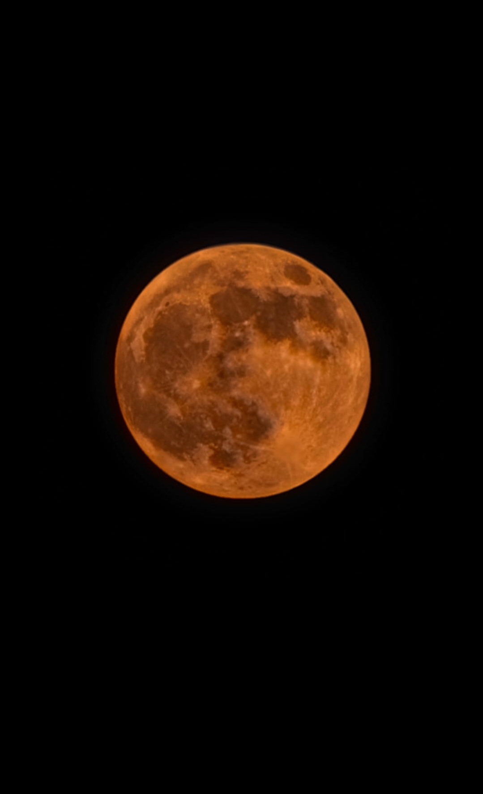

Curious
by nature.
Always becoming.
I’m Shohan — drawn to technology, new places and the small details that make a moment worth remembering. This is a space for the things I’m learning, seeing and becoming.
“I don't believe in jinxing. I believe in keeping unfinished stories private.”A thought I live by

More than a bio.
A little context, without trying to fit a whole person into a few lines.
I enjoy discovering how things work, exploring unfamiliar places and capturing moments worth keeping. I’m interested in technology and the possibilities it creates, but just as curious about the world beyond a screen. This journal brings those interests together — simply, honestly and as they evolve.
Places that stay.
A few frames from places I’ve visited. Every place leaves a different kind of impression.


Through my lens.
A collection of moments, details and scenes I wanted to hold on to.



Let's stay connected.
Find me, follow along or get in touch. I’m always open to a good conversation.
Good things take shape quietly.
Thanks for spending a little time in my corner of the internet.